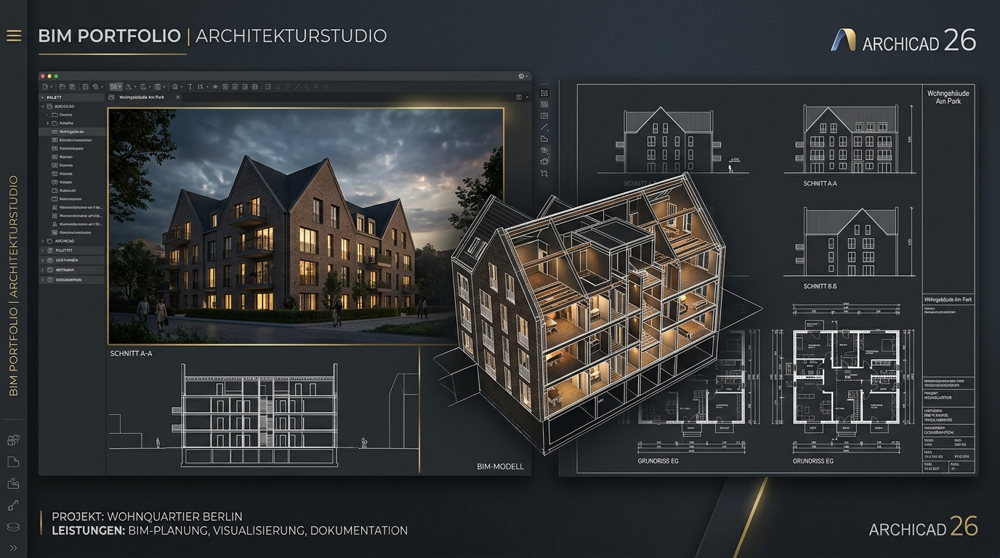
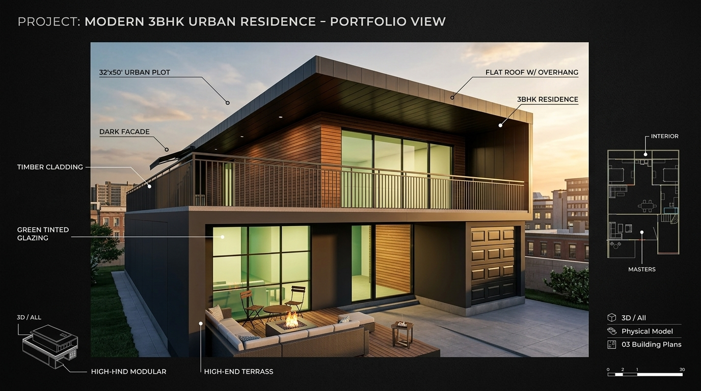

IS 800:2007 · FREELANCE

↗
Civil Engineering undergraduate at Delhi Technological University (DTU) with international BIM experience at Celekohr GmbH (Germany) and design coordination at Studio Orange. Specialized in multidisciplinary coordination, 30+ monthly dimension pre-checks, drawing reviews, and process-driven project delivery.



Co-founded an independent digital construction and BIM modeling studio providing architectural 3D modeling, precision CAD drafting, BOQ take-offs, and high-fidelity visualizations for engineering practices across Europe and India.
Converting point clouds, surveys, and 2D architectural drawings into coordinated BIM models at LOD 200–350.
High-precision 2D AutoCAD (DWG) production sheets, gusset plate layouts, and fabrication connection plans.
Rigorous pre-checks for dimension errors, clearance clashes, and IFC export conformity prior to client handoff.
Comprehensive material take-offs, schedule extractions, and high-resolution 3D renders for project presentations.
Awarded by Celekohr GmbH (Germany) for outstanding BIM architectural modeling work, IFC extraction, and dimension pre-checks on European projects.
Awarded 1st Place at Delhi Idea & Innovation Competition competing among 200+ colleges for engineering design of an Affordable EMG Bionic Arm.
Awarded by 1 Delhi Battalion NCC (Col. Gurpreet Singh) for exemplary command leadership, discipline, and managing camp operations for 450+ cadets as 2IC.
Professional credential validating Agile frameworks, work breakdown structures, risk documentation, and stakeholder governance.
National Cadet Corps certifications under Ministry of Defence, validating military training, weapon handling, discipline, drill, national integration camps, and progression through the National Cadet Corps.
B.Tech in Civil Engineering at Delhi Technological University (2023–2027) with focus on structural mechanics, steel detailing, BIM, and construction management.
Interested in discussing BIM modeling, project coordination workflows, or exploring new engineering collaborations? Let's connect and discuss working together.
Contact Me (ankit.k.jha.05@gmail.com) ↗